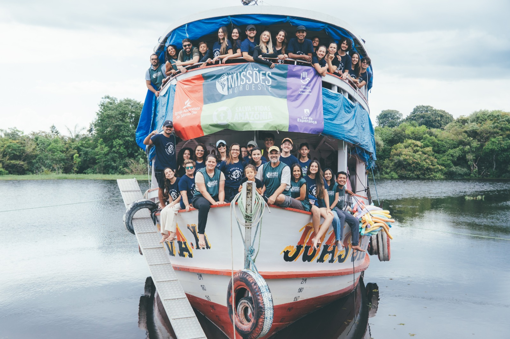
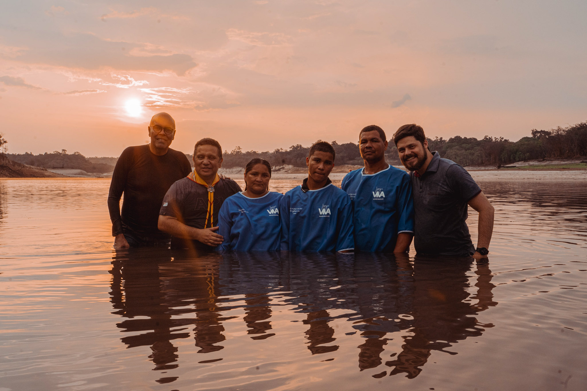
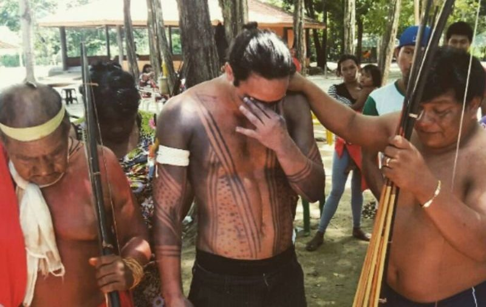

Missão Amazonas
Conheça a história de João e sua família, que dedicam suas vidas ao trabalho missionário em comunidades ribeirinhas.
João e Família
João, sua esposa Mariana e seus dois filhos fazem parte de uma equipe missionária que atua no interior do Amazonas.
A família iniciou esse trabalho após perceber a necessidade de apoio espiritual, educacional e social em comunidades de difícil acesso.
Informações da família
- Responsável: João Almeida
- Idade: 38 anos
- Esposa: Mariana Almeida, 35 anos
- Filhos: Lucas, 10 anos, e Sofia, 7 anos
- Local de atuação: Comunidades ribeirinhas do Amazonas
- Início do projeto: 2021

Um chamado para servir
O projeto Amazonas nasceu do desejo de levar esperança e cuidado a famílias que vivem em comunidades afastadas dos grandes centros urbanos.
João e Mariana trabalham junto às comunidades locais, promovendo encontros, estudos bíblicos, atividades com crianças e ações de apoio às famílias.
A equipe também busca fortalecer líderes locais para que o trabalho continue sendo desenvolvido de maneira próxima da realidade de cada comunidade.
Galeria de fotos



Faça parte dessa missão
Você também pode contribuir com esse projeto por meio da oração, participação e apoio às ações missionárias.